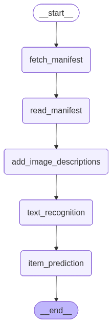

Processing Workflows#
While the descriptions from the first notebook are nice, they’re not research data or archival metadata.
This next section details a workflow that will process your materials into a structured format that can be used for research or library systems. This is an example that can be adapted to your specific needs.

Select Model#
There are many open-source models for OCR or HTR available. The Qwen family (q-when) of models has led the way as a tool to extract handwritten text. There are many models adapted from Qwen, such as the Nanonets OCR model, which preserves structured information like tables or forms.
For this workshop, you can test either “Qwen/Qwen3-VL-30B-A3B-Instruct” or “nanonets/Nanonets-OCR-s”
model_id = "Qwen/Qwen3-VL-30B-A3B-Instruct"
Workflow Requirements#
Input is the URL for a box manifest in EAP (other other IIIF collection)
We need to predict individual items in the folder or box.
We need to recognize the relevant entites (people, places, organizations) in each item in the context of the larger collection. For a legal case, for example, we only need entitle in the case as well as their relationship to the case (e.g. plaintiff, judge, victim).
Strategy#
Extract the text of all individual images
Use text and descriptions to predict individual items (a two-page letter, a 50-page memo…)
Generate item-level research metadata
from IPython.display import Image
display(Image(graph.get_graph().draw_mermaid_png()))

# https://langchain-ai.github.io/langgraph/tutorials/workflows/#prompt-chaining
from typing_extensions import TypedDict
class Box(TypedDict): #Level: File in EAP
box_manifest_uri: str
box_manifest_data: dict
box_metadata: dict
box_summary: str
people: list[str]
places: list[str]
organizations: list[str]
image_urls: list[str]
images: list[dict]
items: dict
sample: int # Process only first n images in the box
from tqdm import tqdm
# Nodes
def fetch_manifest(state: Box) -> Box:
import requests
header = {
"User-Agent": "Mozilla/5.0 (Windows NT 10.0; Win64; x64) AppleWebKit/537.36 (KHTML, like Gecko) Chrome/11"
}
manifest = requests.get(state['box_manifest_uri'], headers=header)
if manifest.status_code != 200:
raise Exception(f"Error downloading manifest: {manifest.status_code}")
print("Fetched manifest successfully!")
return { "box_manifest_data": manifest.json() }
def read_manifest(state: Box) -> Box:
images = []
for canvas in state["box_manifest_data"]["sequences"][0]["canvases"]:
for image in canvas["images"]:
image_uri = image.get('resource', None).get('@id', None)
if image_uri:
images.append(image_uri)
metadata = {}
for item in state["box_manifest_data"]["metadata"]:
metadata[item["label"]] = item["value"]
print(f"Found {len(images)} images in manifest!!")
return { "box_manifest_uri": state["box_manifest_uri"], "box_manifest_data": state["box_manifest_data"], "image_urls": images, "box_metadata": metadata }
def add_image_descriptions(state: Box) -> Box:
custom_llm = GradioChatModel()
images = [{"image_url": url} for url in state["image_urls"]]
for image in tqdm(images, desc="Adding descriptions to images"):
prompt = """Describe the contents of the image.\nUse the following metadata as context: \n"""
for key, value in state["box_metadata"].items():
prompt += f"- {key}: {value}\n"
msg = HumanMessageWithImage(content=prompt, image=image["image_url"])
result = custom_llm.invoke([msg])
image["description"] = result.content
state["images"] = images
return state
def text_recognition(state:Box) -> Box:
"""Extract any text present in the document. Preserve formatting as markdown."""
custom_llm = GradioChatModel()
images = state["images"]
for image in tqdm(images, desc="Extracting text from images"):
prompt = "If printed or handwritten text is present in the image, extract typewritten and handwritten text from the page. Otherwise return nothing. Retain formatting as markdown."
msg = HumanMessageWithImage(content=prompt, image=image['image_url'])
result = custom_llm.invoke([msg])
image['markdown_text'] = result.content
state["images"] = images
return state
def item_prediction(state: Box) -> Box:
# Placeholder for future processing steps
from langchain_core.messages import HumanMessage
custom_llm = GradioChatModel()
images = state["images"]
prompt = """Your are an archival processing assistant. You have descriptions and text from individual pages in a box. Each image is identified by an <image> tag. Group the images into groups that identify coherent items. For example, the images may be the front and back of the same page. Two pages may be the start and end of a letter. You may have images that start or end a folder. Return only a list of grouped images as JSON and your reaonsing. For example: {"items":[[1,2],[3],[4,5,6]], "reasoning:"..."}"""
prompt += "\nUse the following metadata for context, particularly look for types of documents and document groupings (i.e. letters, folders, photographs):\n"
for key, value in state["box_metadata"].items():
prompt += f"- {key}: {value}\n"
prompt += "\n\nHere are the image descriptions and text:\n\n"
for i, image in enumerate(images):
prompt += f"<image {i}>description: {image['description']}; text {image['markdown_text']}</image {i}>"
msg = HumanMessage(content=prompt)
result = custom_llm.invoke([msg])
# convert result content to dict
if result:
import json
state["items"] = json.loads(result.content)
return state
from langgraph.graph import StateGraph, START, END
# Build workflow
builder = StateGraph(Box)
# Add nodes
builder.add_node("fetch_manifest", fetch_manifest)
builder.add_node("read_manifest", read_manifest)
builder.add_node("add_image_descriptions", add_image_descriptions)
builder.add_node("text_recognition", text_recognition)
builder.add_node("item_prediction", item_prediction)
# Add edges to connect nodes
builder.add_edge(START, "fetch_manifest")
builder.add_edge("fetch_manifest", "read_manifest")
builder.add_edge("read_manifest", "add_image_descriptions")
builder.add_edge("add_image_descriptions", "text_recognition")
builder.add_edge("text_recognition", "item_prediction")
builder.add_edge("item_prediction", END)
# Compile
graph = builder.compile()
# Invoke
output = graph.invoke({"box_manifest_uri": "https://eap.bl.uk/archive-file/EAP699-23-1/manifest?manifest=https%3A//eap.bl.uk/archive-file/EAP699-23-1/manifest"})
#TODO add start, end index for images in box
from rich import print
print(output)
Fetched manifest successfully!
Found 4 images in manifest!!
Loaded as API: https://apjanco-fantastic-futures.hf.space ✔
Adding descriptions to images: 100%|██████████| 4/4 [03:00<00:00, 45.21s/it]
Loaded as API: https://apjanco-fantastic-futures.hf.space ✔
Extracting text from images: 100%|██████████| 4/4 [01:45<00:00, 26.35s/it]
Loaded as API: https://apjanco-fantastic-futures.hf.space ✔
{ 'box_manifest_uri': 'https://eap.bl.uk/archive-file/EAP699-23-1/manifest?manifest=https%3A//eap.bl.uk/archive-file/EAP699-23-1/manifest ', 'box_manifest_data': { '@context': 'http://iiif.io/api/presentation/2/context.json', '@id': 'https://eap.bl.uk/archive-file/EAP699-23-1', '@type': 'sc:Manifest', 'label': 'Photographs', 'description': '', 'logo': 'https://eap.bl.uk/themes/custom/eap/images/bl_logo_100.gif', 'attribution': 'Except as otherwise permitted under your national copyright law this material may not be copied or distributed further', 'license': '', 'viewingHint': 'individuals', 'viewingDirection': 'left-to-right', 'metadata': [ {'label': 'Identifier', 'value': 'EAP699/23/1'}, {'label': 'Title', 'value': 'Photographs'}, {'label': 'Place', 'value': 'Moldova, Europe'}, { 'label': 'Link to catalogue record', 'value': '<a href="https://eap.bl.uk/archive-file/EAP699-23-1">View the catalogue record</a>' }, { 'label': 'Citation', 'value': 'Photographs, British Library, EAP699/23/1, https://eap.bl.uk/archive-file/EAP699-23-1' }, { 'label': 'Digitised by', 'value': 'Institute of the Cultural Heritage of the Academy of Sciences of Moldova' }, {'label': 'Digitisation funded by', 'value': 'Endangered Archives Programme supported by Arcadia'}, {'label': 'Language', 'value': 'Romanian, Russian'}, {'label': 'Scripts', 'value': 'Cyrillic, Latin'} ], 'sequences': [ { '@id': 'https://eap.bl.uk/archive-file/EAP699-23-1/sequence', '@type': 'sc:Sequence', 'label': 'Current Page Order', 'viewingHint': 'individuals', 'startCanvas': 'https://eap.bl.uk/archive-file/EAP699-23-1/canvas/1', 'canvases': [ { '@id': 'https://eap.bl.uk/archive-file/EAP699-23-1/canvas/1', '@type': 'sc:Canvas', 'label': '1', 'width': 4633, 'height': 3286, 'images': [ { '@type': 'oa:Annotation', 'motivation': 'sc:painting', 'resource': { '@id': 'https://images.eap.bl.uk/EAP699/EAP699_23_1/1.jp2/full/full/0/default.jpg', '@type': 'dctypes:Image', 'format': 'image/jpg', 'service': { '@context': 'http://iiif.io/api/image/2/context.json', '@id': 'https://images.eap.bl.uk/EAP699/EAP699_23_1/1.jp2', 'protocol': 'http://iiif.io/api/image', 'width': 1534, 'height': 2468, 'tiles': [{'scaleFactors': [1, 2, 4, 8, 16, 32], 'width': 256}], 'profile': [ 'http://iiif.io/api/image/2/level2.json', { 'qualities': ['gray', 'color', 'bitonal'], 'supports': [ 'profileLinkHeader', 'rotationArbitrary', 'regionSquare', 'mirroring' ] } ] } }, 'on': 'https://eap.bl.uk/archive-file/EAP699-23-1/canvas/1' } ] }, { '@id': 'https://eap.bl.uk/archive-file/EAP699-23-1/canvas/2', '@type': 'sc:Canvas', 'label': '2', 'width': 4633, 'height': 3286, 'images': [ { '@type': 'oa:Annotation', 'motivation': 'sc:painting', 'resource': { '@id': 'https://images.eap.bl.uk/EAP699/EAP699_23_1/2.jp2/full/full/0/default.jpg', '@type': 'dctypes:Image', 'format': 'image/jpg', 'service': { '@context': 'http://iiif.io/api/image/2/context.json', '@id': 'https://images.eap.bl.uk/EAP699/EAP699_23_1/2.jp2', 'protocol': 'http://iiif.io/api/image', 'width': 1534, 'height': 2468, 'tiles': [{'scaleFactors': [1, 2, 4, 8, 16, 32], 'width': 256}], 'profile': [ 'http://iiif.io/api/image/2/level2.json', { 'qualities': ['gray', 'color', 'bitonal'], 'supports': [ 'profileLinkHeader', 'rotationArbitrary', 'regionSquare', 'mirroring' ] } ] } }, 'on': 'https://eap.bl.uk/archive-file/EAP699-23-1/canvas/2' } ] }, { '@id': 'https://eap.bl.uk/archive-file/EAP699-23-1/canvas/3', '@type': 'sc:Canvas', 'label': '3', 'width': 4641, 'height': 3304, 'images': [ { '@type': 'oa:Annotation', 'motivation': 'sc:painting', 'resource': { '@id': 'https://images.eap.bl.uk/EAP699/EAP699_23_1/3.jp2/full/full/0/default.jpg', '@type': 'dctypes:Image', 'format': 'image/jpg', 'service': { '@context': 'http://iiif.io/api/image/2/context.json', '@id': 'https://images.eap.bl.uk/EAP699/EAP699_23_1/3.jp2', 'protocol': 'http://iiif.io/api/image', 'width': 1534, 'height': 2468, 'tiles': [{'scaleFactors': [1, 2, 4, 8, 16, 32], 'width': 256}], 'profile': [ 'http://iiif.io/api/image/2/level2.json', { 'qualities': ['gray', 'color', 'bitonal'], 'supports': [ 'profileLinkHeader', 'rotationArbitrary', 'regionSquare', 'mirroring' ] } ] } }, 'on': 'https://eap.bl.uk/archive-file/EAP699-23-1/canvas/3' } ] }, { '@id': 'https://eap.bl.uk/archive-file/EAP699-23-1/canvas/4', '@type': 'sc:Canvas', 'label': '4', 'width': 3304, 'height': 4645, 'images': [ { '@type': 'oa:Annotation', 'motivation': 'sc:painting', 'resource': { '@id': 'https://images.eap.bl.uk/EAP699/EAP699_23_1/4.jp2/full/full/0/default.jpg', '@type': 'dctypes:Image', 'format': 'image/jpg', 'service': { '@context': 'http://iiif.io/api/image/2/context.json', '@id': 'https://images.eap.bl.uk/EAP699/EAP699_23_1/4.jp2', 'protocol': 'http://iiif.io/api/image', 'width': 1534, 'height': 2468, 'tiles': [{'scaleFactors': [1, 2, 4, 8, 16, 32], 'width': 256}], 'profile': [ 'http://iiif.io/api/image/2/level2.json', { 'qualities': ['gray', 'color', 'bitonal'], 'supports': [ 'profileLinkHeader', 'rotationArbitrary', 'regionSquare', 'mirroring' ] } ] } }, 'on': 'https://eap.bl.uk/archive-file/EAP699-23-1/canvas/4' } ] } ] } ], 'related': [ { '@id': 'https://eap.bl.uk/project/EAP699', 'format': 'text/html', 'label': 'View the related Endangered Archives Project' } ] }, 'box_metadata': { 'Identifier': 'EAP699/23/1', 'Title': 'Photographs', 'Place': 'Moldova, Europe', 'Link to catalogue record': '<a href="https://eap.bl.uk/archive-file/EAP699-23-1">View the catalogue record</a>', 'Citation': 'Photographs, British Library, EAP699/23/1, https://eap.bl.uk/archive-file/EAP699-23-1', 'Digitised by': 'Institute of the Cultural Heritage of the Academy of Sciences of Moldova', 'Digitisation funded by': 'Endangered Archives Programme supported by Arcadia', 'Language': 'Romanian, Russian', 'Scripts': 'Cyrillic, Latin' }, 'image_urls': [ 'https://images.eap.bl.uk/EAP699/EAP699_23_1/1.jp2/full/full/0/default.jpg', 'https://images.eap.bl.uk/EAP699/EAP699_23_1/2.jp2/full/full/0/default.jpg', 'https://images.eap.bl.uk/EAP699/EAP699_23_1/3.jp2/full/full/0/default.jpg', 'https://images.eap.bl.uk/EAP699/EAP699_23_1/4.jp2/full/full/0/default.jpg' ], 'images': [ { 'image_url': 'https://images.eap.bl.uk/EAP699/EAP699_23_1/1.jp2/full/full/0/default.jpg', 'description': 'This is a vintage, sepia-toned photograph, likely from the early to mid-20th century, depicting a family portrait of three individuals: a man, a woman, and a young boy. The photograph is housed in a decorative frame with a black and gold patterned border.\n\n- **The Man:** Positioned on the left, he is a balding man with a serious expression. He is wearing a dark, high-collared jacket over a lighter-colored shirt. His gaze is directed straight at the camera.\n- **The Boy:** Standing in the center, the young boy has a shaved head and is dressed in a textured, high-collared jacket. He looks directly at the viewer with a solemn, neutral expression.\n- **The Woman:** On the right, the woman has dark, styled hair and is looking towards the camera with a subtle, gentle smile. She is wearing a dark, high-necked garment.\n\nThe photograph itself shows significant signs of age and damage. There is a prominent vertical scratch or crack in the center, which has caused a rainbow-colored light flare or reflection. The image is also faded, and the edges are discolored and worn, indicating it is a well-preserved but old artifact. The overall composition is formal, typical of studio portraits from that era.\n\nThe metadata indicates this photograph is part of a collection from Moldova, Europe, and was digitized by the Institute of the Cultural Heritage of the Academy of Sciences of Moldova as part of the Endangered Archives Programme.', 'markdown_text': 'There is no printed or handwritten text in the image.' }, { 'image_url': 'https://images.eap.bl.uk/EAP699/EAP699_23_1/2.jp2/full/full/0/default.jpg', 'description': 'This is a vintage, full-length group photograph of a class, likely from a school in Moldova, Europe. The image, identified by the catalog number EAP699/23/1, shows approximately twenty-five young people, a mix of boys and girls, arranged in several rows. The front row is seated, while the others stand behind them.\n\nThe photograph is in a sepia tone and shows significant signs of age, including prominent cracks across the surface, yellowing, and a large, faded brown stain in the upper left corner. The individuals are dressed in the fashion typical of the late 1970s or early 1980s, with many wearing turtleneck sweaters, cardigans, and collared shirts. A man in a suit and tie, possibly a teacher or class advisor, is seated in the front row, slightly to the right of the center. The students are looking directly at the camera with serious expressions.\n\nThe photograph was digitised by the Institute of the Cultural Heritage of the Academy of Sciences of Moldova as part of the Endangered Archives Programme, funded by Arcadia. It is part of a collection of photographs from Moldova, where the primary languages are Romanian and Russian, and the scripts used are Cyrillic and Latin.', 'markdown_text': 'There is no printed or handwritten text in the image.' }, { 'image_url': 'https://images.eap.bl.uk/EAP699/EAP699_23_1/3.jp2/full/full/0/default.jpg', 'description': "This is a vintage, colorized photograph of a man and a woman, likely a mother and son, taken outdoors in Moldova, Europe. The image is heavily aged, showing significant signs of wear such as creases, discoloration, and fading, particularly along the edges and corners. The overall color palette is muted, with a yellowish-brown tint and areas of pinkish discoloration.\n\nThe man, positioned on the left, has dark, wavy hair and a mustache. He is wearing a light-colored, possibly yellow or beige, collared shirt with a subtle checkered pattern, open at the neck to reveal a lighter undershirt. He looks directly at the camera with a neutral expression.\n\nThe woman, on the right, is smiling gently. She wears a light-colored headscarf with a small, colorful pattern and long, tasseled earrings. Her attire consists of a dark, possibly navy blue, vest with white trim over a light-colored collared shirt.\n\nThey are standing in front of a blurred background of leafy trees or bushes, suggesting a garden or park setting. The photograph's style and condition suggest it is a personal memento from the mid-to-late 20th century.", 'markdown_text': 'There is no printed or handwritten text in the image.' }, { 'image_url': 'https://images.eap.bl.uk/EAP699/EAP699_23_1/4.jp2/full/full/0/default.jpg', 'description': 'This is a portrait photograph of a young man, likely from the late 20th century, presented within an ornate, decorative frame. The photograph itself is a colorized portrait, showing signs of age and wear, including creases, discoloration, and a noticeable rainbow-like reflection across the top.\n\nThe subject is a young man with dark, wavy, shoulder-length hair, styled with volume. He is looking directly at the camera with a neutral expression. He is dressed formally in a dark suit jacket, a white collared shirt, and a patterned tie that appears to be a combination of yellow and dark colors, possibly with a geometric or dotted pattern.\n\nThe portrait is set within an oval frame against a soft, pinkish-white background. This central image is surrounded by a dark blue, rectangular border decorated with various illustrations. On the left, there is a floral motif featuring blue thistles, wheat stalks, and other plants. On the right, there is a similar floral design with pink blossoms and a bird. The bottom of the border depicts a landscape scene with white birch trees, other trees, and a small house, all rendered in a stylized manner. The entire photograph is mounted on a light-colored, aged paper or cardboard backing.\n\nBased on the metadata, this photograph was digitized by the Institute of the Cultural Heritage of the Academy of Sciences of Moldova and is part of the Endangered Archives Programme, indicating its cultural and historical significance.', 'markdown_text': 'There is no text in the image.' } ], 'items': { 'items': [[0], [1], [2], [3]], 'reasoning': 'The images are grouped as individual items because they are distinct photographs with different subjects, compositions, and contexts. Each image is a separate photograph: Image 0 is a family portrait, Image 1 is a class group photo, Image 2 is a portrait of a man and woman, and Image 3 is a formal portrait of a young man in a decorative frame. While they are all part of the same collection (EAP699/23/1) from Moldova and share similar metadata about digitization and preservation, they do not form a coherent set like a letter, a folder, or the front and back of a single document. Therefore, they are best treated as four separate, individual items.' } }